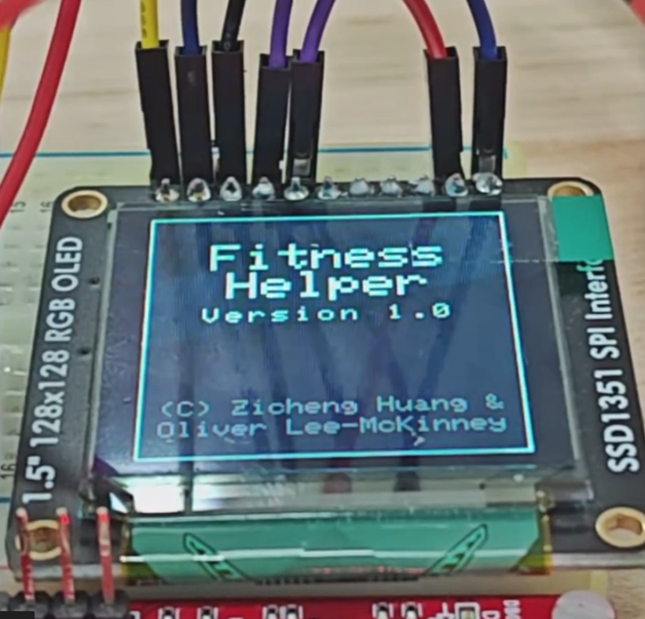

EEC172 Final Project
Project Image

Project Description
Our project is a wearable workout assistant that helps users maintain proper exercise form while tracking their workout progress. The device evaluates whether a user performs an exercise correctly and only advances progress through a set when the required form conditions are met.
The system is built around a CC3200 microcontroller and uses multiple sensors to monitor movement. An accelerometer tracks body posture, while an ultrasonic distance sensor measures motion such as push-up depth or stability during planks. The microcontroller processes this sensor data and provides real-time feedback through an OLED display and a buzzer. Users navigate the device’s menu using an infrared TV remote, allowing them to select workouts and view progress on the OLED screen. After completing a workout, the system uploads the session summary to AWS DynamoDB and automatically sends the results to the user via email. The device can also display basic statistics, such as the total calories burned over a week.
Overall, the system combines wearable sensing, embedded processing, and cloud connectivity to help users exercise with better form while keeping track of their fitness activity.